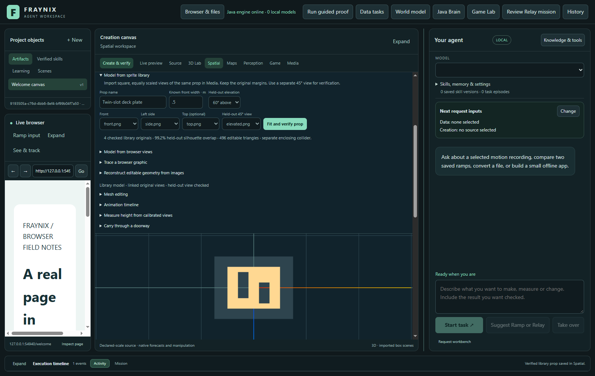
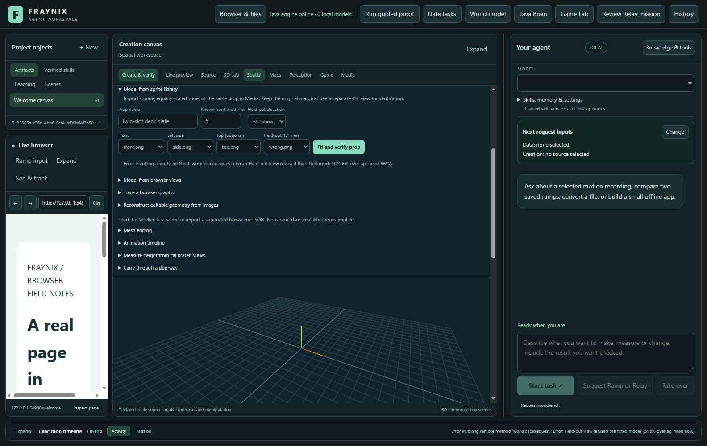
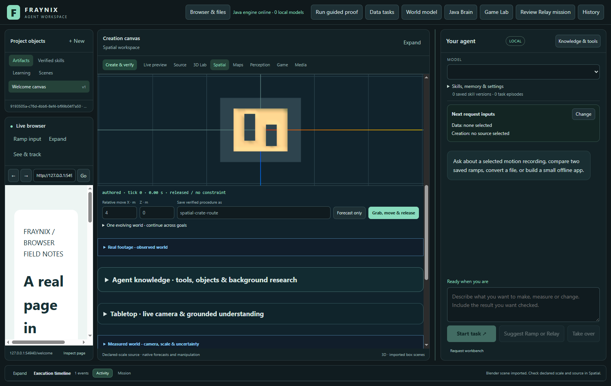

Reconstruct editable props from the sprite library
Fit registered library originals, verify a separate view and round-trip the mesh and collider through Blender.
The correct held-out view scored 99.2%. The wrong prop was refused at 24.6%. Blender reopened the separate box collider and returned a 5 mm visual edit.

Library reconstruction and both through-openings

The wrong held-out prop is refused

Fraynix reopens the edited Blender visual
System files
Open source